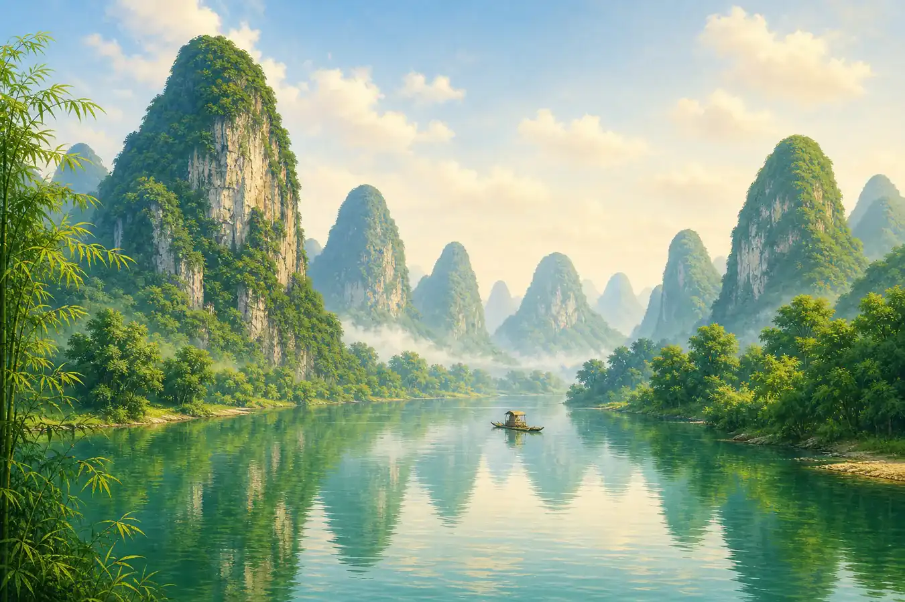
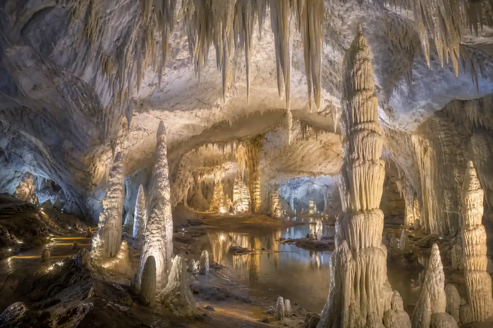

桂林的水就像一幅活的画
Guilin's Water Looks Like a Living Painting
Page 1
山从地上长出来
Mountains That Pop Up from the Ground

Guilin's limestone peaks rise one by one along the Li River.
桂林的山，一眼看上去就和很多地方不太一样。它们不是连绵起伏的一整条山脉，而是一座一座独立立起来的小山峰。远看过去，像地里一下子冒出来许多竹笋，密密地散在漓江两岸。
这不是火山熔岩或者地壳挤压出来的山，这是水啃出来的。几千万年前，桂林是一片汪洋大海。海底积累了厚厚一层石灰岩。后来海水退了，石灰岩裸露出来，江南充沛的雨水含着一丁点酸性，几千万年一滴一滴地穿过岩石 - 把石头蚀成了这些彼此独立的尖峰。这不是山的造型，是水的雕塑。
Guilin's mountains do not look like many other mountains. They do not run together in one long line. Instead, small peaks stand up one by one. From far away, they look like green bamboo shoots popping out of the ground along the Li River.
These mountains were not made by volcanoes. They were carved by water.
Millions of years ago, Guilin was under the sea. Thick layers of limestone formed on the sea floor. Later, the sea moved away, and the limestone was left in the open air. Rainwater in this part of China has a tiny bit of acid in it. Drop by drop, year after year, it slowly ate into the rock.
After a very, very long time, the water carved the stone into tall, separate peaks. So Guilin's mountains are not just mountain shapes. They are water sculptures.
Page 2
漓江 - 像一幅慢慢展开的山水画
The Li River: A Painting That Slowly Opens

The view on the back of China's 20-yuan bill comes from the Li River.
从桂林到阳朔，八十多公里的漓江，常常会让人想到中国山水画。江面平缓，水色发青，两岸的山一峰接一峰，形状千奇百怪 - 有的像大象在吸水，有的像骆驼在过江，有的像一位老人抬头望月。山影倒映在水里，一只竹筏撑过来，船夫把竹篙往河底一插，你一下子就不太分得清，哪片是山，哪片是倒影。
人民币二十元纸币的背面，就印着漓江有名的一段景色 - 黄布倒影。一张钞票上印的不是建筑，也不是人物，而是一段山水。今天的人拿着二十元看那片江面，确实很容易生出一种感觉：古人坐船经过这里时，大概也会被这幅景色看得发愣。
The Li River from Guilin to Yangshuo runs for more than 80 kilometers. Many people say it looks like a Chinese landscape painting.
The river is calm. The water has a soft green color. On both sides, the mountains rise one after another in strange and wonderful shapes. One looks like an elephant drinking water. Another looks like a camel crossing the river. Another may look like an old man lifting his head to look at the moon.
The mountains shine upside down in the water. A bamboo raft comes by. The boatman pushes a long pole into the river. For a moment, you may not know which part is the real mountain and which part is the reflection.
On the back of China's 20-yuan bill, there is a famous view from the Li River called Huangbu Reflection. It is not a building or a person on the bill. It is water and mountains. When people stand there today with a 20-yuan bill in their hands, it is easy to imagine people long ago riding past in boats and staring at the same view.
Page 3
银子岩 - 地下的桂林
Silver Cave: Guilin Underground

Stalactites and stalagmites grow drop by drop inside the cave.
桂林的奇观不止在地上。地底下有银子岩 - 一个亿万年溶洞。洞里全是钟乳石和石笋，在灯光映照下像是白银浇铸的宫殿。一根钟乳石长一厘米要上百年，洞里的钟乳石从洞顶悬垂下来，七八米高 - 那已经是十万年前的水滴了。
Guilin's wonders are more than what you see above the ground. Under the mountains, there is Silver Cave, a huge limestone cave that has been forming for a very, very long time.
Inside the cave are stalactites hanging down from the ceiling and stalagmites growing up from the floor. Under the lights, they can look like a palace made of silver.
A stalactite may need more than 100 years to grow just one centimeter. Some of the stone shapes in the cave are seven or eight meters tall. That means they were made by water drops from far, far back in time.
Page 4
山水为什么在中国画里是"活"的？
Why Do Mountains and Water Feel Alive in Chinese Painting?
因为中国山水画不只是照着景色临摹，更讲"写意"。画家画山时，未必要把水全画出来，可山脚边一片留白，就像已经有水在流。山不画满，云不说透，反而更有诗意。桂林和漓江当然不是中国山水审美的唯一来源，但它们确实很容易让人明白，为什么中国人会那么喜欢"人在画中游"这种感觉。
Chinese landscape painting is about more than copying what a place looks like. It also tries to show a feeling.
An artist may paint a mountain but leave empty white space near its foot. That blank space can feel like water. The artist may leave clouds unfinished, or let the mountains fade into mist. Somehow, the picture can feel more alive because it does not explain every little thing.
Guilin and the Li River are not the only places that shaped Chinese ideas of beauty. But they make the feeling easy to understand. When people say, "It is like traveling inside a painting," Guilin helps you know what they mean.
小结
Summary
桂林的山是水一点一点雕出来的，漓江的倒影把山、水、云和船全揉在了一起。二十元纸币上的黄布倒影，银子岩里慢慢长大的钟乳石，还有江边那种一转头就像走进画里的感觉，都让桂林变成了很多人心里最像山水画的地方之一。
Guilin's mountains were carved slowly by water. The Li River mixes mountains, clouds, boats, and reflections until they seem to melt together. The Huangbu Reflection on the 20-yuan bill, the slow-growing stones inside Silver Cave, and the feeling of walking into a painting all make Guilin one of China's most famous places for mountain-and-water scenery.